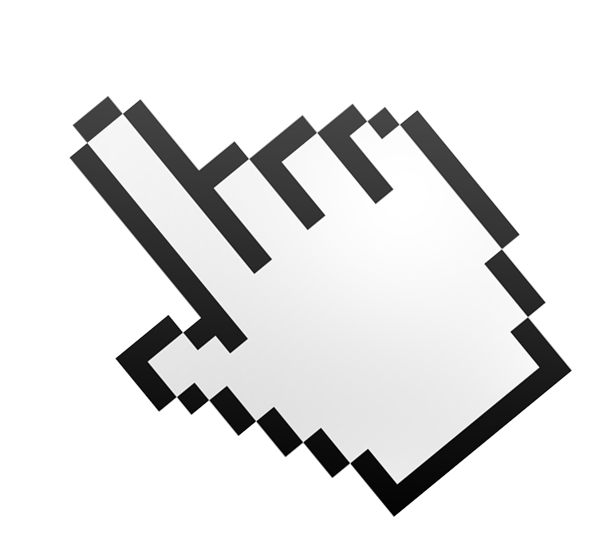
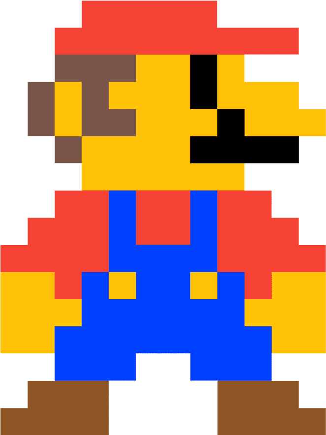

이벤트 객체
이벤트가 가진 특정 명령/속성(정보)을 이용하기 위함
키보드 이벤트 객체속성
- keyCode : 키보드값(키넘버)을 반환
- key : 키명을 반환
- ctrlKey : ctrl키를 눌렀을 때 true, 아니면 false값 반환
- altKey :
- shiftKey : shift키를 눌렀을 때 true, 아니면 false값 반환
마우스 이벤트 객체 속성
- clientX / clientY : 마우스의 화면좌표값
- pageX / pageY : 마우스의 도큐먼트 좌표값
- screenX / screenY : 화면(모니터)의 좌표값
- offsetX / offsetY : 선택자 영역의 좌표값
left: ???, top : ???

